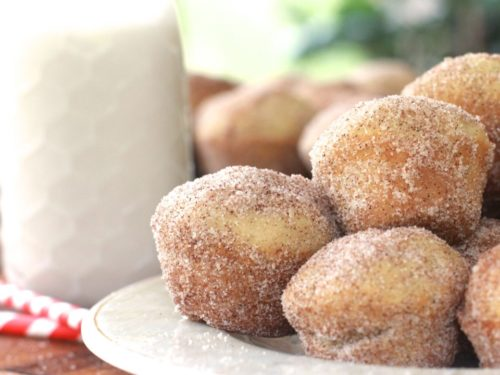

Donut Muffins

Description
I was in charge of bringing some treats for the coffee bar.
Guess what I made? Yep, these little cinnamon sugar doughnut muffins!
Don’t they just scream brunch?
Pair it up with some coffee and honey hush!! It’s like almost a too perfect pair.
Ingredients
- 12 Tablespoons unsalted butter softened (1 1/2 sticks)
- 1/2 cup white sugar
- 1/2 cup light brown sugar packed
- 1/4-1/2 teaspoon almond extract
- 3 cups all-purpose flour
- 1 Tablespoon + 1/2 teaspoon baking powder
- 1/4 teaspoon baking soda
- 1 teaspoon salt
- 1 teaspoon cinnamon
- 1 cup almond milk
Steps
- YPreheat oven to 350. F.
- Spray a mini muffin pan with non-stick baking spray. Set aside.
- In a large bowl, cream together butter and sugars.
- Add in eggs.
- Mix in vanilla extract and almond extract. Set aside.
- In a medium bowl, sift together flour, baking powder, baking soda, salt and cinnamon.